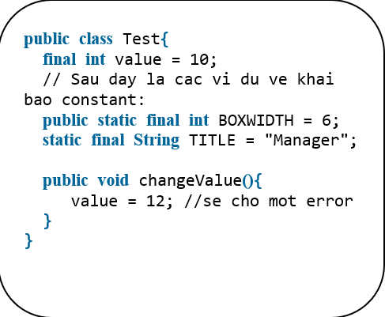
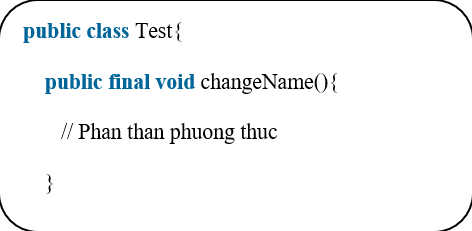

3 - Final Modifier trong Java
Biến final trong Java
Một biến final có thể được khởi tạo một cách rõ rằng chỉ một lần. Một biến tham chiếu được khai báo final có thể không bao giờ được tái gán để tham chiếu tới một đối tượng khác.
Tuy nhiên, dữ liệu bên trong đối tượng có thể bị thay đổi. Vì thế, trạng thái của đối tượng có thể thay đổi, nhưng không phải là tham chiếu.
Với các biến, final Modifier thường được sử dụng với static để tạo một hằng số cho một biến class.
Ví dụ

Phương thức final trong Java
Một phương thức final không thể bị ghi đè phương thức (override) bởi bất kỳ lớp phụ nào. Như đã đề cập trước đó, final modifier ngăn cản một phương thức bị sửa đổi trong một lớp phụ.
Mục đích chính của việc tạo phương thức final sẽ là: nội dung của phương thức không nên bị thay đổi bởi bên ngoài.
Ví dụ
Bạn khai báo các phương thức sử dụng final modifier trong khai báo lớp, như trong ví dụ sau:

Lớp final trong Java
Mục đích chính của việc sử dụng một lớp được khai báo final là để ngăn cản lớp bị phân lớp thành lớp phụ. Nếu một lớp được đánh dấu là final, thì không có lớp nào có thể kế thừa bất kỳ đặc điểm nào từ lớp final đó.